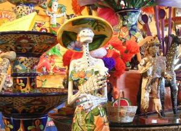
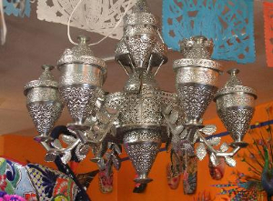
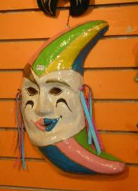
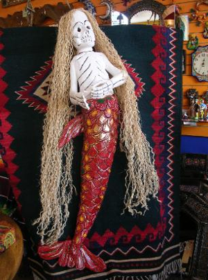
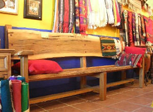
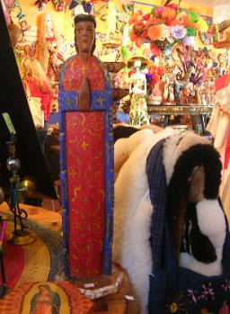
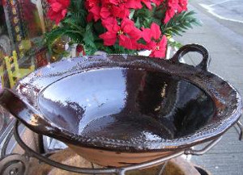
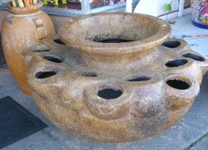
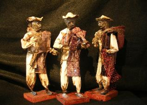

Special Items
-

Talavera Catrina from Guanajuato
33" x 9-1/2 (base) -

Tin Chandelier 6 large and 6 small light holders surround the lamp 1 light holder at the base approximately 28 " high by 30 " wide
-

El Hombre Luna Paper mache mask 14 " x 8"
-

La Sirena Painted carved figure from Guerrero 52" x 18"
-

Bench made of solid Borneo wood made in Tonalo, Jalisco 8 feet long, 3-1/2 feet tall, 18 inches deep
-

Wood saint carved by the Tarahumara Indians 22" x 5"
Special Items
-

La Cazuela Cooking pot for mole 20" x 6"
-

Large glazed terracotta pot from Tonala, Jalisco Created especially for growing a variety of small plants including strawberries and herbs! 22" wide mouth / 38" wide overall / 21" high
-

Paper mache figures from Tonala, Jalisco Highly-detailed paper mache and laquer-finished figures representing typical villagers going about their daily activities in the streets and market places of Mexico each approximately 12" tall